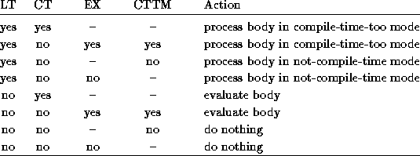

Common Lisp the Language, 2nd Edition

The eval-when special form allows pieces of code to
be executed only at compile time, only at load time, or
when interpreted but not compiled. Its uses are relatively esoteric.
[Special Form]
eval-when ({situation}*) {form}*
The body of an eval-when form is processed as an implicit progn, but only in the situations listed. Each situation must be a symbol, either compile, load, or eval.
eval specifies that the interpreter should process the body. compile specifies that the compiler should evaluate the body at compile time in the compilation context. load specifies that the compiler should arrange to evaluate the forms in the body when the compiled file containing the eval-when form is loaded.
The eval-when construct may be more precisely understood in terms of a model of how the compiler processes forms in a file to be compiled. Successive forms are read from the file using the function read. These top-level forms are normally processed in what we shall call not-compile-time mode. There is another mode called compile-time-too mode. The eval-when special form controls which of these two modes to use.
Every form is processed as follows:
One example of the use of eval-when is that if the compiler is to be able to properly read a file that uses user-defined reader macro characters, it is necessary to write
(eval-when (compile load eval)
(set-macro-character #\$ #'(lambda (stream char)
(declare (ignore char))
(list 'dollar (read stream)))))
This causes the call to set-macro-character to be executed
in the compiler's execution environment, thereby modifying its
reader syntax table.


X3J13 voted in March 1989 (EVAL-WHEN-NON-TOP-LEVEL) to
completely redesign the eval-when construct to solve some problems
concerning its treatment in other than top-level contexts.
The new definition is upward compatible with the old definition,
but the old keywords are deprecated.
[Special Form]
eval-when ({situation}*) {form}*
The body of an eval-when form is processed as an implicit progn, but only in the situations listed. Each situation must be a symbol, either :compile-toplevel, :load-toplevel, or :execute.
The use of :compile-toplevel and :load-toplevel controls whether and when processing occurs for top-level forms. The use of :execute controls whether processing occurs for non-top-level forms.
The eval-when construct may be more precisely understood in terms of a model of how the file compiler, compile-file, processes forms in a file to be compiled.
Successive forms are read from the file by the file compiler using read. These top-level forms are normally processed in what we call ``not-compile-time'' mode. There is one other mode, called ``compile-time-too'' mode, which can come into play for top-level forms. The eval-when special form is used to annotate a program in a way that allows the program doing the processing to select the appropriate mode.
Processing of top-level forms in the file compiler works as follows:

In the preceding table the column LT asks whether :load-toplevel is one of the situations specified in the eval-when form; CT similarly refers to :compile-toplevel and EX to :execute. The column CTTM asks whether the eval-when form was encountered while in compile-time-too mode. The phrase ``process body'' means to process the body as an implicit top-level progn in the indicated mode, and ``evaluate body'' means to evaluate the body forms sequentially as an implicit progn in the dynamic execution context of the compiler and in the lexical environment in which the eval-when appears.
Note that top-level forms are guaranteed to be processed in the order in which they textually appear in the file, and that each top-level form read by the compiler is processed before the next is read. However, the order of processing (including, in particular, macro expansion) of subforms that are not top-level forms is unspecified.
For an eval-when form that is not a top-level form in the file compiler (that is, either in the interpreter, in compile, or in the file compiler but not at top level), if the :execute situation is specified, its body is treated as an implicit progn. Otherwise, the body is ignored and the eval-when form has the value nil.
For the sake of backward compatibility, a situation may also be compile, load, or eval. Within a top-level eval-when form these have the same meaning as :compile-toplevel, :load-toplevel, and :execute, respectively; but their effect is undefined when used in an eval-when form that is not at top level.
The following effects are logical consequences of the preceding specification:
(defun foo () (eval-when (:execute) (print 'foo)))
is compiled the call to print should be compiled, not evaluated at compile time.
(defmacro foo ()
(really-foo) ;Wrong
`(really-foo))
(defmacro foo ()
`(eval-when (:compile-toplevel
:load-toplevel :execute) ;Right
(really-foo)))
Adherence to this convention will mean that such macros will behave intuitively when called in non-top-level positions.
(let ((x 3))
(eval-when (:compile-toplevel :load-toplevel :execute)
(print x)))
will print 3 at execution (that is, load) time and will not print anything at compile time. This is important so that expansions of defun and defmacro can be done in terms of eval-when and can correctly capture the lexical environment. For example, an implementation might expand a defun form such as
(defun bar (x) (defun foo () (+ x 3)))
into
(progn (eval-when (:compile-toplevel)
(compiler::notice-function 'bar '(x)))
(eval-when (:load-toplevel :execute)
(setf (symbol-function 'bar)
#'(lambda (x)
(progn (eval-when (:compile-toplevel)
(compiler::notice-function 'foo
'()))
(eval-when (:load-toplevel :execute)
(setf (symbol-function 'foo)
#'(lambda () (+ x 3)))))))))
which by the preceding rules would be treated the same as
(progn (eval-when (:compile-toplevel)
(compiler::notice-function 'bar '(x)))
(eval-when (:load-toplevel :execute)
(setf (symbol-function 'bar)
#'(lambda (x)
(progn (eval-when (:load-toplevel :execute)
(setf (symbol-function 'foo)
#'(lambda () (+ x 3)))))))))
Here are some additional examples.
(let ((x 1))
(eval-when (:execute :load-toplevel :compile-toplevel)
(setf (symbol-function 'foo1) #'(lambda () x))))
The eval-when in the preceding expression is not at top level, so only the :execute keyword is considered. At compile time, this has no effect. At load time (if the let is at top level), or at execution time (if the let is embedded in some other form which does not execute until later), this sets (symbol-function 'foo1) to a function that returns 1.
(eval-when (:execute :load-toplevel :compile-toplevel)
(let ((x 2))
(eval-when (:execute :load-toplevel :compile-toplevel)
(setf (symbol-function 'foo2) #'(lambda () x)))))
If the preceding expression occurs at the top level of a file to be compiled, it has both a compile time and a load-time effect of setting (symbol-function 'foo2) to a function that returns 2.
(eval-when (:execute :load-toplevel :compile-toplevel) (setf (symbol-function 'foo3) #'(lambda () 3)))
If the preceding expression occurs at the top level of a file to be compiled, it has both a compile time and a load-time effect of setting the function cell of foo3 to a function that returns 3.
(eval-when (:compile-toplevel)
(eval-when (:compile-toplevel)
(print 'foo4)))
The preceding expression always does nothing; it simply returns nil.
(eval-when (:compile-toplevel)
(eval-when (:execute)
(print 'foo5)))
If the preceding form occurs at the top level of a file to be compiled, foo5 is printed at compile time. If this form occurs in a non-top-level position, nothing is printed at compile time. Regardless of context, nothing is ever printed at load time or execution time.
(eval-when (:execute :load-toplevel)
(eval-when (:compile-toplevel)
(print 'foo6)))
If the preceding form occurs at the top level of a file to be compiled, foo6 is printed at compile time. If this form occurs in a non-top-level position, nothing is printed at compile time. Regardless of context, nothing is ever printed at load time or execution time.